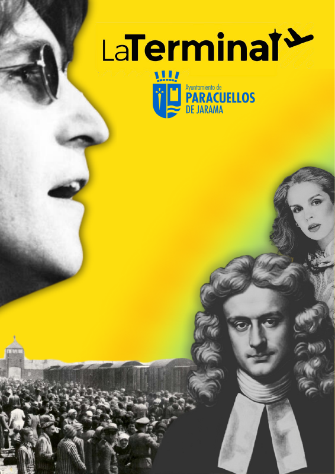
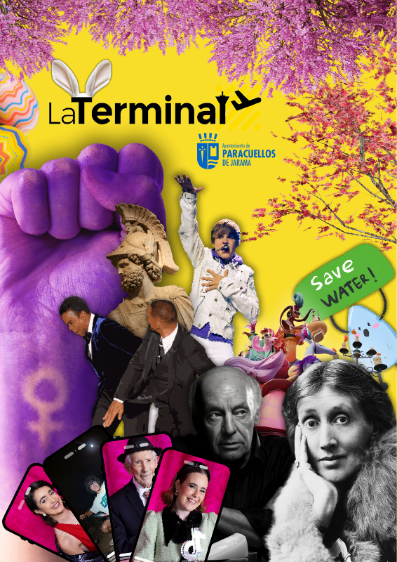

OTROS TRABAJOS
Diseño, sonido
y soluciones digitales.
Trabajos que completan mi recorrido creativo, además del portfolio audiovisual.
DISEÑO EDITORIAL
La Terminal.
Dirección creativa y diseño editorial de dos ediciones de la revista.
Un sistema visual basado en collage, composición y contraste, con personalidades distintas y una identidad reconocible.


HERRAMIENTA DIGITAL
Split Sheets.
Diseñé y desarrollé una herramienta local para preparar acuerdos de colaboración musical.
- El problema
- Recopilar datos, comprobar porcentajes y generar documentos manualmente.
- La solución
- Un formulario guiado con validaciones y generación del documento descargable e imprimible.
- La entrega
- Un proceso local con comprobaciones antes de generar el acuerdo.
PRODUCCIÓN MUSICAL
SOULDIESEL.
Producción, grabación, mezcla y máster.